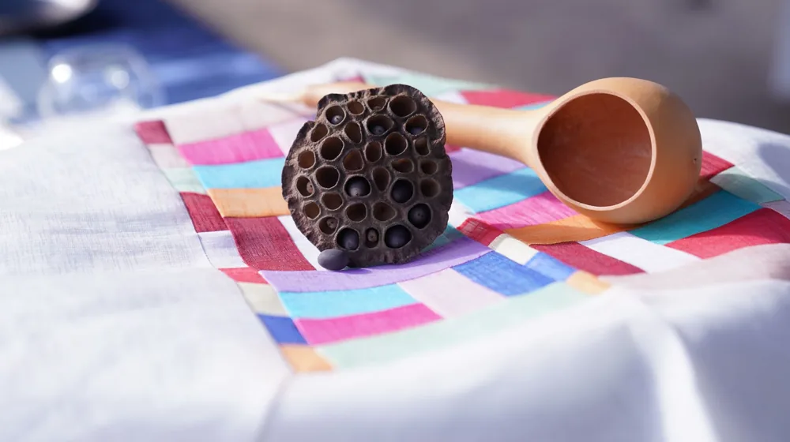
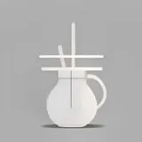

나전칠기 입문용 브랜드 완벽 비교: 실패 없는 전통 소품 고르는 법
사진: RDNE Stock project / Pexels (무료 이미지, 출처 표기)
나전칠기(조개껍데기를 가공한 '나전'과 옻칠을 한 '칠기'의 합성어)를 소장하고 싶지만, 관리하기 어렵거나 가격이 부담스러워 망설이셨나요? 최근에는 일상 공간에 어울리는 모던한 디자인과 합리적인 가격의 입문용 제품이 다양하게 출시되고 있습니다.
처음 나전칠기를 접하는 분들이 안심하고 선택할 수 있도록 대중적인 브랜드 비교와 실용적인 고르는 법을 담백하게 정리해 드립니다.
1. 입문용 현대 나전칠기 브랜드 3곳 비교

한국공예·디자인문화진흥원(KCDF) 등 공식 기관의 우수 공예품 선정 브랜드를 참고하여, 일상에서 쉽게 쓰기 좋은 대표적인 입문용 브랜드 세 곳을 비교했습니다.
각 브랜드의 판매 가격과 제품 라인업은 제작 시기 및 수작업 여부에 따라 변동될 수 있으므로, 구매 전 공식 홈페이지를 통해 최신 정보를 확인하시는 것을 권장합니다.
2. 실패 없는 나전칠기 입문용 소품 고르는 기준
첫 구매 시에는 가구처럼 큰 제품보다는 매일 손이 닿거나 시선이 머무는 소품으로 시작하는 것이 좋습니다. 이때 핵심적으로 살펴봐야 할 기준은 소재와 제작 방식입니다.
- 밑나무(백골)의 종류: 전통 방식인 원목 외에도 최근에는 변형이 적은 MDF(중밀도섬유판, 나무 섬유를 압축해 만든 판재)를 사용해 가격을 낮춘 입문용 제품이 많습니다.
- 칠의 방식: 천연 옻칠(나무에서 채취한 친환경 수지 칠)인지, 캐슈칠(캐슈넛 껍질 기름을 원료로 한 화학 칠)인지 확인하세요. 캐슈칠은 광택이 좋고 가격이 저렴해 입문용으로 자주 쓰입니다.
- 나전의 고정 상태: 자개 조각이 들뜨거나 모서리가 날카롭지 않고 매끄럽게 마감 처리되었는지 살펴보아야 합니다.
3. 오래 두고 쓰는 나전칠기 관리와 주의사항
나전칠기는 천연 소재로 만들어지기 때문에 온도와 습도 변화에 민감합니다. 올바른 관리 방법을 숙지하면 수십 년이 지나도 변함없는 아름다움을 유지할 수 있습니다.
직사광선이 내리쬐는 창가나 히터 주변은 피해서 보관해야 합니다. 열과 자외선에 지속적으로 노출되면 칠이 변색되거나 자개가 들떠 떨어질 위험이 있습니다.
물에 오랫동안 담가두는 것은 금물입니다. 식기류로 사용할 경우 부드러운 스펀지에 중성세제를 묻혀 가볍게 닦아낸 뒤, 마른 행주로 즉시 물기를 제거해 바람이 잘 통하는 그늘에 말려주세요.
4. 초보자를 위한 구매 전 체크리스트
최종 결정을 내리기 전에 아래의 세 가지 질문을 스스로에게 던져보세요. 훨씬 만족스러운 소비를 하실 수 있습니다.
- 사용 목적이 분명한가요? 단순히 장식용으로 둘 것인지, 컵받침이나 보석함처럼 매일 사용할 것인지에 따라 디자인과 칠의 종류가 달라집니다.
- 공식 인증이나 작가의 낙관이 있나요? 신뢰할 수 있는 브랜드나 무형문화재 이수자 등 전문 작가의 마크가 있다면 훗날 소장 가치가 더 높아집니다.
- A/S가 가능한 제품인가요? 수작업 특성상 자개 떨어짐이나 칠 벗겨짐이 발생할 수 있으므로 사후 보수 서비스가 가능한 브랜드 제품을 선택하는 것이 안전합니다.
🔗 이 글도 함께 보면 좋아요: 직장인 다이어트 도시락 준비, 3단계 밀프렙 핵심 가이드
관련 추천 상품
이 포스팅은 쿠팡 파트너스 활동의 일환으로, 이에 따른 일정액의 수수료를 제공받습니다.
한눈에 보는 상품 목록

뮷즈 (국립박물관문화재단)
국립박물관의 유물을 모티브로 하여 현대인들의 일상에 어울리는 감각적이고 저렴한 문구 및 소품류를 제안합니다.
칠몽
전통 친환경 옻칠 기술을 접목하여 안심하고 사용할 수 있는 생활 식기류와 수저 세트를 전문 제작합니다.
아리지안
감각적인 자개 예술과 모던 디자인을 결합해 고급스러운 보석함과 인테리어 오브제를 선보이는 수공예 브랜드입니다.